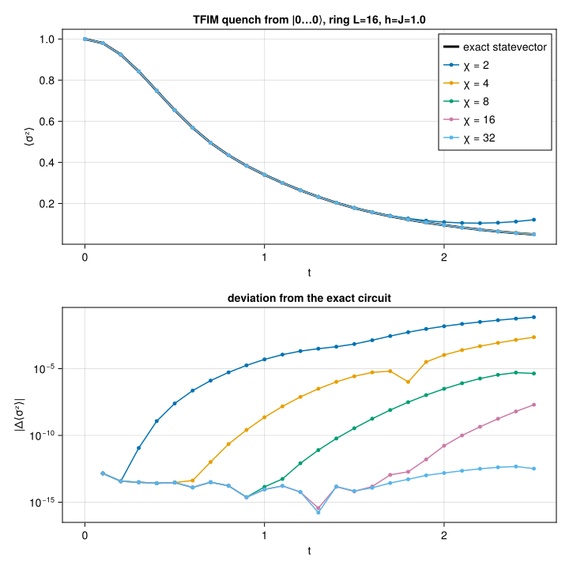

Running OpenQASM circuits
Circuits are usually authored somewhere else — a Qiskit script, a benchmark suite like QASMBench, a compiler pass — and exported as OpenQASM 2.0. Canopy reads such a file and runs it as a tensor-network state, so nothing has to be transcribed into LocalGates by hand.
Reading is a two-step affair:
read_qasm(from a path) orparse_qasm(from a string) returns aQASMCircuit— a physics-agnostic description in which qubits are plain 1-based integers and gates are symbolic names with evaluated numeric parameters. Register flattening, broadcast statements (h q;), classical expressions (rz(pi/2)) and user-declaredgates are all resolved here.Circuit(qc, state)lowers that onto aTensorNetworkState, producing aCircuitofLocalGates thatapply!accepts.
Keeping the two apart is what makes the qubit-to-lattice question a lowering concern rather than a parsing one, and that is the interesting question here: a tensor-network state lives on a graph, and a two-site gate can only act on an edge of that graph.
We do two things below. First a GHZ circuit read from a file, which is exact and pins down the conventions. Then a 16-qubit Trotterized quench of the transverse-field Ising model, where bond truncation actually bites, benchmarked against exact statevector evolution of the very same circuit.
This example can be run from the command line with:
julia --project=examples examples/qasm_circuit/main.jlusing Canopy: read_qasm, parse_qasm, qasm_lattice, QASMCircuit, QASMStatement,
product_state, vertices, virtualspace, UndirectedEdge,
BPMessages, belief_propagation, Circuit, apply!, expect
using TensorKit
using TensorKitTensors.SpinOperators: σˣ, σᶻ
using MatrixAlgebraKit: truncrank
using Printf
using CairoMakie
const T = ComplexF64
const P = ComplexSpace(2)
const Z = σᶻ(T)
const X = σˣ(T)2←2 TensorMap{ComplexF64, TensorKit.ComplexSpace, 1, 1, Vector{ComplexF64}}:
codomain: ⊗(ℂ^2)
domain: ⊗(ℂ^2)
blocks:
* Trivial() => 2×2 reshape(view(::Vector{ComplexF64}, 1:4), 2, 2) with eltype ComplexF64:
0.0+0.0im 1.0+0.0im
1.0+0.0im 0.0+0.0imA GHZ circuit from a file
ghz.qasm is what a six-qubit GHZ preparation looks like coming out of Qiskit: a qreg, an unused creg, a Hadamard, a cx ladder, and a trailing barrier.
print(read(joinpath(@__DIR__, "ghz.qasm"), String))// GHZ state on six qubits, in the shape of a Qiskit `QuantumCircuit.qasm()` export.
// The trailing `measure meas -> q;` lines such an export ends with have been stripped:
// Canopy simulates the state, not the measurement record.
OPENQASM 2.0;
include "qelib1.inc";
qreg q[6];
creg meas[6];
h q[0];
cx q[0],q[1];
cx q[1],q[2];
cx q[2],q[3];
cx q[3],q[4];
cx q[4],q[5];
barrier q[0],q[1],q[2],q[3],q[4],q[5];
read_qasm reduces that to the gates it applies. The include "qelib1.inc" is accepted and ignored (its gates are built in), the creg is recorded as declared and never used, and the barrier is kept as a marker — hence seven statements for six primitive gates.
qc = read_qasm(joinpath(@__DIR__, "ghz.qasm"))QASMCircuit(6 qubits: q[6])
7 statements, 6 primitive gatesChoosing the lattice
The state has to live on a graph whose edges cover every two-qubit gate in the circuit. qasm_lattice reads that graph off the circuit itself, adding one edge per coupled pair, so no gate ever needs routing. For a cx ladder this is just an open chain.
edges = qasm_lattice(qc)5-element Vector{Canopy.UndirectedEdge{Int64}}:
Canopy.UndirectedEdge{Int64}(1, 2)
Canopy.UndirectedEdge{Int64}(2, 3)
Canopy.UndirectedEdge{Int64}(3, 4)
Canopy.UndirectedEdge{Int64}(4, 5)
Canopy.UndirectedEdge{Int64}(5, 6)The circuit's connectivity is used verbatim, which is both the convenience and the catch: a densely connected circuit yields a densely connected network, on which belief propagation is a poor approximation. Supplying your own lattice is the escape hatch, shown in the next section.
Lowering and applying
The initial state is the product state $|0\cdots0\rangle$; Trivial() => [1.0, 0.0] names the local state as the coefficients of $|0\rangle$ in the (only) sector of a symmetry-free physical space.
Circuit(qc, state) then maps qubit i onto vertex i — the default when the state has Int vertices — and turns each statement into a gate tensor. Six primitive gates give six gates here, but they would not in general: a statement supported on one or two qubits is contracted into a single tensor, so a user-declared gate expanding to a dozen primitives on two qubits still costs only one truncating update.
state = product_state(T, edges, P, Trivial() => [1.0, 0.0])
msgs = BPMessages(state)
circuit = Circuit(qc, state)
state, msgs, info = apply!(state, msgs, circuit; trunc = truncrank(4))
msgs = belief_propagation(msgs, state; maxiter = 200, tol = 1.0e-12)
@printf "%d statements → %d gates\n" length(qc) length(circuit.gatelist)
@printf "truncation error: %.3e\n" info.ϵ
@printf "bond dimensions: %s\n" join(dim.(virtualspace.(Ref(state), edges)), ", ")7 statements → 6 gates
truncation error: 0.000e+00
bond dimensions: 2, 2, 2, 2, 2
A GHZ state has bond dimension 2 everywhere, so nothing was truncated even though four was allowed. Its signature is that every spin is unpolarized while every pair is perfectly correlated: $\langle \sigma^z_i \rangle = \langle \sigma^x_i \rangle = 0$ and $\langle \sigma^z_i \sigma^z_j \rangle = 1$. expect takes a single vertex for a one-site operator and an UndirectedEdge (or a pair of vertices) for a two-site one.
@printf "⟨σᶻ⟩ = %s\n" join((@sprintf("%+.3f", real(expect(state, msgs, Z, v))) for v in 1:6), " ")
@printf "⟨σˣ⟩ = %s\n" join((@sprintf("%+.3f", real(expect(state, msgs, X, v))) for v in 1:6), " ")
@printf "⟨σᶻσᶻ⟩ = %s\n" join((@sprintf("%+.3f", real(expect(state, msgs, Z ⊗ Z, e))) for e in edges), " ")⟨σᶻ⟩ = +0.000 +0.000 +0.000 +0.000 +0.000 +0.000
⟨σˣ⟩ = +0.000 +0.000 +0.000 +0.000 +0.000 +0.000
⟨σᶻσᶻ⟩ = +1.000 +1.000 +1.000 +1.000 +1.000
Putting the qubits somewhere else
When the circuit's own connectivity is not the lattice you want, pass both a lattice and a qubitmap saying which vertex each qubit occupies. Every two-qubit gate still has to land on an edge, but which edge is now up to you — and the lattice may carry edges the circuit never uses.
Here the same GHZ ladder goes onto a six-site ring, reversed, so that qubit i sits at vertex 7 - i. The ladder occupies five of the ring's six edges and the closing edge (6, 1) stays idle.
ring = [UndirectedEdge(i, mod1(i + 1, 6)) for i in 1:6]
ring_state = product_state(T, ring, P, Trivial() => [1.0, 0.0])
ring_msgs = BPMessages(ring_state)
ring_circuit = Circuit(qc, ring_state; qubitmap = 6:-1:1, layered = true)
ring_state, ring_msgs, _ = apply!(ring_state, ring_msgs, ring_circuit; trunc = truncrank(4))
ring_msgs = belief_propagation(ring_msgs, ring_state; maxiter = 200, tol = 1.0e-12)
@printf "⟨σᶻσᶻ⟩ = %s\n" join(
(@sprintf("%+.3f", real(expect(ring_state, ring_msgs, Z ⊗ Z, e))) for e in ring), " "
)⟨σᶻσᶻ⟩ = +1.000 +1.000 +1.000 +1.000 +1.000 +0.000
The five ladder edges come out perfectly correlated as before, and the idle sixth edge comes out at zero — which is a useful thing to have seen, because the exact answer is 1: that edge joins qubits 6 and 1, and GHZ correlates every pair.
The reason is that expect on two sites is a Bethe estimate, not an exact contraction. It closes the environment with belief-propagation messages and contracts the two site tensors through the bond between them, and no gate ever raised that bond above dimension 1. A dimension-1 bond cannot carry correlation, so the estimate factorizes into two maximally mixed marginals. Correlations reach an observable only along bonds the circuit has actually used — worth remembering when choosing a lattice larger than the circuit needs.
What is rejected
Canopy has no measurement, collapse or classical-register machinery, so measure, reset, if and opaque are errors rather than silent no-ops — strip them and simulate the state they act on. And since apply! implements one- and two-site gates only, a genuine three-qubit gate has to be decomposed upstream (Qiskit's transpiler will do it).
for src in (
"OPENQASM 2.0;\nqreg q[1];\ncreg c[1];\nmeasure q[0] -> c[0];\n",
"OPENQASM 2.0;\nqreg q[3];\nccx q[0], q[1], q[2];\n",
)
try
qasm_lattice(parse_qasm(src))
catch err
println(err.msg)
end
end`measure` is not supported: Canopy has no measurement or classical-register machinery
`ccx` acts on 3 qubits, but `apply!` implements only one- and two-site gates; decompose it into one- and two-qubit gates first
A quench of the transverse-field Ising model
Now a circuit where the tensor network is doing real work. We quench
\[H = -J \sum_{\langle ij \rangle} \sigma^z_i \sigma^z_j - h \sum_i \sigma^x_i\]
on a ring of $L = 16$ qubits at the critical point $h = J = 1$, starting from the fully polarized $|0\cdots0\rangle$, and follow the order parameter $\langle \sigma^z \rangle(t) = L^{-1} \sum_i \langle \sigma^z_i \rangle$.
The circuit is a first-order Trotter splitting of $e^{-iHt}$: per step, the $\sigma^z\sigma^z$ bonds in two non-overlapping (even/odd) layers, then a transverse-field layer. In OpenQASM that is rzz(-2 J dt) and rx(-2 h dt), since rzz(θ) = exp(-i θ σᶻσᶻ / 2) and rx(θ) = exp(-i θ σˣ / 2).
We emit it as OpenQASM text rather than as Julia gates, which is the whole point of the example — and it lets the source exercise a few conveniences of the language: the bond gate is a user-declared gate whose body evaluates a classical expression, the field layer is a single statement broadcast over the whole register, and each step ends with a barrier.
const L = 16
const J = 1.0
const h = 1.0
const DT = 0.1
const NSTEPS = 25
const CHIS = (2, 4, 8, 16, 32)
function tfim_qasm(L, J, h, dt, nsteps)
io = IOBuffer()
println(io, "OPENQASM 2.0;")
println(io, "include \"qelib1.inc\";")
println(io, "gate ising(dt) a, b { rzz(-2*dt) a, b; }")
println(io, "qreg q[$L];")
for _ in 1:nsteps
# even bonds, then odd bonds: two layers of mutually non-overlapping gates
for parity in (0, 1), i in parity:2:(L - 1)
println(io, "ising($(J * dt)) q[$i], q[$(mod(i + 1, L))];")
end
println(io, "rx(-2*$(h * dt)) q;")
println(io, "barrier q;")
end
return String(take!(io))
end
qasm_source = tfim_qasm(L, J, h, DT, NSTEPS)
println(join(split(qasm_source, '\n')[1:14], '\n'), "\n...")OPENQASM 2.0;
include "qelib1.inc";
gate ising(dt) a, b { rzz(-2*dt) a, b; }
qreg q[16];
ising(0.1) q[0], q[1];
ising(0.1) q[2], q[3];
ising(0.1) q[4], q[5];
ising(0.1) q[6], q[7];
ising(0.1) q[8], q[9];
ising(0.1) q[10], q[11];
ising(0.1) q[12], q[13];
ising(0.1) q[14], q[15];
ising(0.1) q[1], q[2];
ising(0.1) q[3], q[4];
...
Splitting the circuit at its barriers
parse_qasm gives one QASMCircuit for the whole evolution, but we want an observable after every Trotter step. The IR is an ordinary struct holding statements in source order, so it can be cut into per-step circuits at the barrier markers.
qc_tfim = parse_qasm(qasm_source)
function split_at_barriers(qc::QASMCircuit)
steps = QASMCircuit[]
chunk = QASMStatement[]
for stmt in qc.statements
if stmt.barrier
isempty(chunk) || push!(steps, QASMCircuit(qc.nqubits, qc.registers, chunk))
chunk = QASMStatement[]
else
push!(chunk, stmt)
end
end
isempty(chunk) || push!(steps, QASMCircuit(qc.nqubits, qc.registers, chunk))
return steps
end
steps = split_at_barriers(qc_tfim)
@printf "%d Trotter steps of %d statements each\n" length(steps) length(first(steps))25 Trotter steps of 32 statements each
qasm_lattice recovers the ring, including the bond that closes it. That loop is why belief propagation is genuinely an approximation here, and not merely a bookkeeping device as it was on the GHZ chain.
tfim_edges = qasm_lattice(qc_tfim)16-element Vector{Canopy.UndirectedEdge{Int64}}:
Canopy.UndirectedEdge{Int64}(1, 2)
Canopy.UndirectedEdge{Int64}(3, 4)
Canopy.UndirectedEdge{Int64}(5, 6)
Canopy.UndirectedEdge{Int64}(7, 8)
Canopy.UndirectedEdge{Int64}(9, 10)
Canopy.UndirectedEdge{Int64}(11, 12)
Canopy.UndirectedEdge{Int64}(13, 14)
Canopy.UndirectedEdge{Int64}(15, 16)
Canopy.UndirectedEdge{Int64}(2, 3)
Canopy.UndirectedEdge{Int64}(4, 5)
Canopy.UndirectedEdge{Int64}(6, 7)
Canopy.UndirectedEdge{Int64}(8, 9)
Canopy.UndirectedEdge{Int64}(10, 11)
Canopy.UndirectedEdge{Int64}(12, 13)
Canopy.UndirectedEdge{Int64}(14, 15)
Canopy.UndirectedEdge{Int64}(1, 16)Exact reference
At $L = 16$ the full $2^{16}$ statevector is cheap, so we can evolve it exactly and thereby isolate the truncation error: the reference applies the identical lowered gates, so the first-order Trotter error is common to both runs and cancels out of the comparison.
Those gates come straight off the lowered Circuit, whose LocalGates carry their sites and their tensor. Dense leg i belongs to the i-th vertex of vertices(state); that iteration order is insertion order rather than sorted order, so it is read off the state instead of assumed.
function dense_apply(ψ::Array{T}, circuit, pos)
n = ndims(ψ)
for g in circuit.gatelist
k = length(g.sites)
u = reshape(convert(Array, g.tensor), 2^k, 2^k)
legs = [pos[s] for s in g.sites]
# bring the target legs to the front, hit them with the gate matrix, put them back
perm = vcat(legs, setdiff(1:n, legs))
φ = u * reshape(permutedims(ψ, perm), 2^k, :)
ψ = permutedims(reshape(φ, ntuple(_ -> 2, n)), invperm(perm))
end
return ψ
end
# L⁻¹ Σᵢ ⟨σᶻᵢ⟩ of a (not necessarily normalized) dense statevector
function dense_mz(ψ::Array{T})
n = ndims(ψ)
return sum(1:n) do d
A = reshape(ψ, 2^(d - 1), 2, :)
return sum(abs2, view(A, :, 1, :)) - sum(abs2, view(A, :, 2, :))
end / (n * sum(abs2, ψ))
end
function run_exact(steps, edges)
state = product_state(T, edges, P, Trivial() => [1.0, 0.0])
pos = Dict(v => i for (i, v) in enumerate(vertices(state)))
n = length(pos)
ψ = zeros(T, ntuple(_ -> 2, n))
ψ[ntuple(_ -> 1, n)...] = 1
mz = [dense_mz(ψ)]
for s in steps
ψ = dense_apply(ψ, Circuit(s, state), pos)
push!(mz, dense_mz(ψ))
end
return mz
endrun_exact (generic function with 1 method)The tensor-network run
One apply! per Trotter step, re-converging the belief-propagation messages afterwards so that the next step's truncations are taken in a well-gauged basis, and measuring in between. truncrank(χ) caps every bond at χ.
This is also where layered = true earns its keep: within a step the even bonds, the odd bonds and the field layer are each sets of mutually non-overlapping gates, and the barrier prevents a layer from straddling two steps.
function run_bp(steps, edges, χ)
state = product_state(T, edges, P, Trivial() => [1.0, 0.0])
msgs = BPMessages(state)
circuits = [Circuit(s, state; layered = true) for s in steps]
mz = [sum(real(expect(state, msgs, Z, v)) for v in 1:L) / L]
ϵmax = 0.0
for circuit in circuits
state, msgs, info = apply!(state, msgs, circuit; trunc = truncrank(χ))
msgs = belief_propagation(msgs, state; maxiter = 200, tol = 1.0e-10)
ϵmax = max(ϵmax, info.ϵ)
push!(mz, sum(real(expect(state, msgs, Z, v)) for v in 1:L) / L)
end
return mz, ϵmax
endrun_bp (generic function with 1 method)Sweep and compare
ts = DT .* (0:NSTEPS)
println("TFIM quench L=$L J=$J h=$h dt=$DT steps=$NSTEPS")
mz_exact = run_exact(steps, tfim_edges)
mz_bp = Dict{Int, Vector{Float64}}()
@printf " %-5s %-13s %-13s %-10s\n" "χ" "⟨σᶻ⟩(t=2.5)" "max |Δ⟨σᶻ⟩|" "max ϵ"
for χ in CHIS
mz, ϵmax = run_bp(steps, tfim_edges, χ)
mz_bp[χ] = mz
@printf " %-5d %-13.9f %-13.3e %-10.2e\n" χ mz[end] maximum(abs, mz - mz_exact) ϵmax
flush(stdout)
end
@printf " %-5s %-13.9f\n" "exact" mz_exact[end]TFIM quench L=16 J=1.0 h=1.0 dt=0.1 steps=25
χ ⟨σᶻ⟩(t=2.5) max |Δ⟨σᶻ⟩| max ϵ
2 0.120858206 7.142e-02 8.14e-02
4 0.051713053 2.274e-03 5.86e-02
8 0.049434482 5.080e-06 7.90e-03
16 0.049438800 1.991e-08 1.04e-04
32 0.049438820 4.710e-13 3.72e-07
exact 0.049438820
The order parameter decays from 1 towards 0, and the tensor-network curves converge onto the exact one exponentially in $\chi$: at $\chi = 4$ the worst-case deviation over the whole trajectory is already $\sim 2 \times 10^{-3}$, and by $\chi = 32$ the circuit is reproduced to below $10^{-12}$.
That last number also says something about the loop: since raising $\chi$ alone drives the error to $10^{-13}$, the Bethe approximation on this ring costs at most that much for these observables. Bond truncation, not belief propagation, is the accuracy bottleneck here.
max ϵ is the largest discarded weight over all steps and bonds. It runs one to two orders of magnitude above the error in $\langle \sigma^z \rangle$ — local observables are far less sensitive than the full wavefunction — but it falls with $\chi$ in step with it, which makes it the quantity to watch when no exact reference is at hand.
let
fig = Figure(size = (720, 720))
colors = Makie.wong_colors()
ax1 = Axis(
fig[1, 1]; xlabel = "t", ylabel = "⟨σᶻ⟩",
title = "TFIM quench from |0…0⟩, ring L=$L, h=J=$J"
)
lines!(ax1, ts, mz_exact; color = :black, linewidth = 3, label = "exact statevector")
for (i, χ) in enumerate(CHIS)
scatterlines!(ax1, ts, mz_bp[χ]; color = colors[i], markersize = 7, label = "χ = $χ")
end
axislegend(ax1; position = :rt)
# same colours as above, so this panel needs no legend of its own
ax2 = Axis(
fig[2, 1]; xlabel = "t", ylabel = "|Δ⟨σᶻ⟩|", yscale = log10,
title = "deviation from the exact circuit"
)
for (i, χ) in enumerate(CHIS)
# t = 0 is exact by construction and would fall off a log axis
err = max.(abs.(mz_bp[χ] - mz_exact)[2:end], 1.0e-16)
scatterlines!(ax2, ts[2:end], err; color = colors[i], markersize = 7)
end
linkxaxes!(ax1, ax2)
outdir = joinpath(@__DIR__, "figs"); mkpath(outdir)
outfile = joinpath(outdir, "qasm_circuit.svg")
save(outfile, fig)
println("wrote $outfile")
fig
endwrote /mnt/home/ldevos/Projects/Canopy/QASM/docs/src/examples/qasm_circuit/figs/qasm_circuit.svg

This page was generated using Literate.jl.